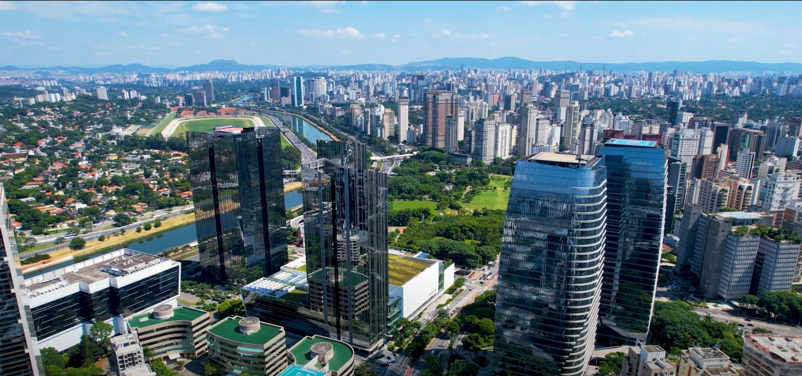

São Paulo é o principal centro financeiro, corporativo e mercantil da América Latina. É a cidade mais populosa do Brasil e do continente americano, famosa por sua diversidade cultural, gastronomia rica e vida noturna agitada.
A cidade possui diversos pontos turísticos icônicos, como o Museu de Arte de São Paulo (MASP), o Parque Ibirapuera e a Avenida Paulista. É um lugar onde pessoas de todas as partes do mundo se encontram para trabalhar, estudar e viver.
